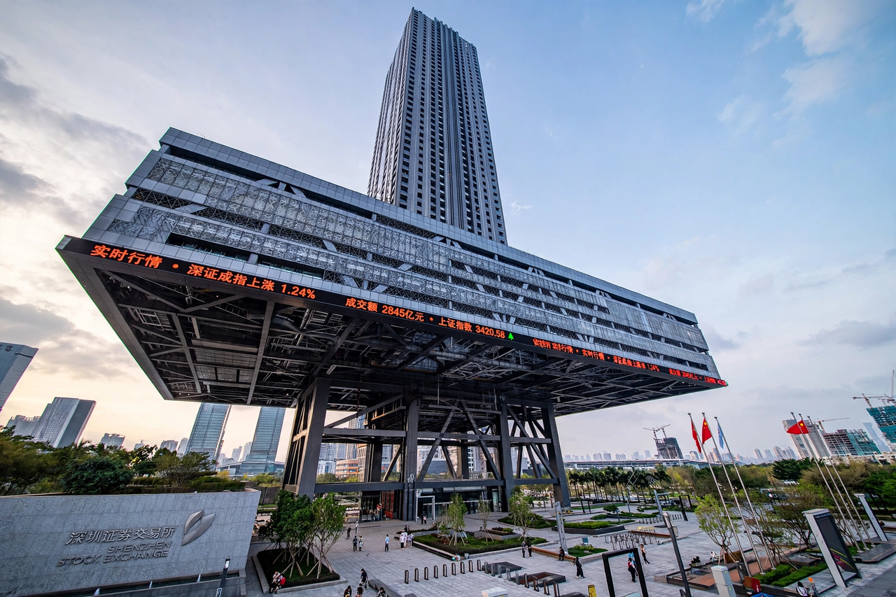

Shenzhen Stock Exchange
| Shenzhen Stock Exchange (SZSE) | |
|---|---|
| Founded | 1 December 1990 |
| Location | Shenzhen, Guangdong, China |
| Key indices | SZSE Component, ChiNext |
The Shenzhen Stock Exchange (SZSE) is one of China's two main stock exchanges, alongside the Shanghai Stock Exchange. Established in December 1990, it is headquartered in Shenzhen, Guangdong province, and is regulated by the China Securities Regulatory Commission.

Markets
- Main Board — large and mid-cap established companies
- ChiNext — launched 2009, a growth-enterprise board for innovative and start-up companies, often compared to NASDAQ
The exchange is known for listing many of China's technology and manufacturing companies, reflecting the Pearl River Delta's economic profile.
Trading
Trading is conducted electronically in renminbi-denominated A-shares (and historically B-shares in Hong Kong dollars). Foreign investor access has expanded through the Stock Connect programmes linking Shenzhen with Hong Kong.